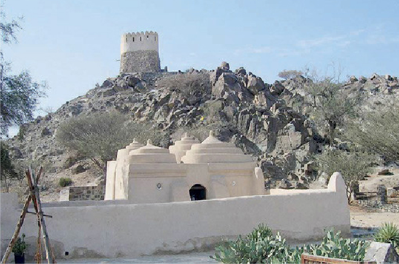
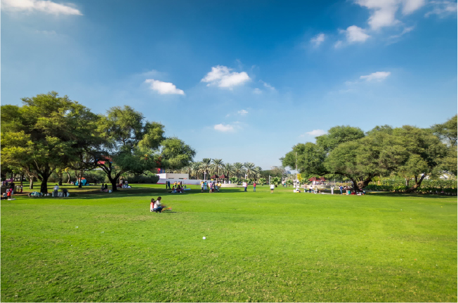
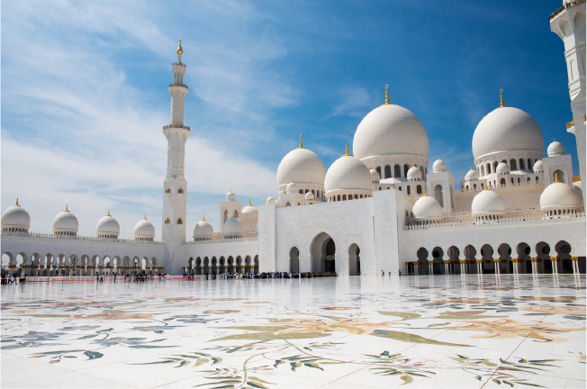

-
1. Snoopy Island
.jpg)
True to its name – resembling the famous Snoopy cartoon character – this island is located off Al Aqah beach and is considered one of the most important tourist destinations in Fujairah, thanks to its natural landscape and captivating ambiance. Snoopy Island attracts water sports enthusiasts, as it offers countless water activities and exciting natural surroundings that make for a wonderful adventure.
Learn more -
2. Al Bidyah Mosque
This historic mosque is nestled between Khor Fakkan and Dibbah Al Fujairah and is the oldest mosque in the UAE, with its construction dating back to the year 1446. It boasts a unique architecture style with four domes, making it a popular tourist destination for residents and visitors alike. Key Highlights include
Learn more -
3. Gardens and Parks
With a multitude of gardens and parks throughout the emirates, it is sure to have something for everyone. For those with a penchant for beach gardens, Abu Dhabi Corniche, Mamzar Park, Dubai Creek Park and Al Majaz Waterfront in Sharjah will not disappoint. Desert parks include Jebel Hafit Desert Park in Al Ain and Mushrif Park in Dubai; whereas themed parks – such as water parks – including Murjan Splash Park in Abu Dhabi, Butterfly Gardens in Dubai and Sharjah and Dubai Garden Glow all offer a memorable experience to visitors. Ecological gardens like Safari Dubai are a must-see, as they feature a wide variety of animals in their natural habitats.
Learn more -
4. Sheikh Zayed Grand Mosque
One of the largest mosques in the world today, Sheikh Zayed Grand Mosque is an architectural masterpiece in its own right, as it combines various architectural styles. The mosque features 82 domes and was built under the orders of the late Sheikh Zayed Bin Sultan Al Nahyan as a symbol representing the message of peace, tolerance and coexistence preached by Islam.
Learn more